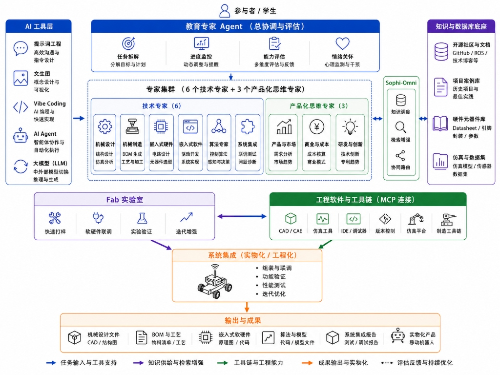

面向团队内部开发者、顶尖高校科研合作者与行业客户， 通过 AI Native 多智能体编排加速从"底座模型 / 仿真设计"到"工业级实物化产出"的完整 Sim-to-Real 闭环。
Orchestrator Agent（项目协调与评估专家）统一编排调度 9 个专业领域 Subagent， 涵盖6 个技术专家与3 个产品化思维专家， 实现工业需求拆解、研发进度监控与交付质量多维度评估。

包含总协调与评估 Agent，6 个技术专家子智能体与 3 个产品化思维专家子智能体协同网络，打通知识底座、工具链与实物化输出。
结构设计 · CAE 仿真分析 · 拓扑优化 · 疲劳寿命预测
BOM 自动生成 · 工艺路径规划 · CNC/增材编程
电路设计 · 工业级元器件选型 · EMC/热仿真
驱动开发 · RTOS 实现 · CAN/EtherCAT 总线
控制算法 · VLA 感知决策 · Sim-to-Real 迁移
物理联调 · 复杂故障诊断 · 性能回归测试
行业需求分析 · 竞品对标 · 市场趋势研判
BOM 成本核算 · ROI 建模 · 商业落地模式
技术创新侦察 · 专利与 IP 分析 · 前沿追踪
企业级知识调度中枢——多模态检索增强（RAG）、Agent 协同路由、 连接四大知识与数据库底座的中央智能路由层。
从 AI 工具层 到 MCP 工程工具链， 经 Sophi-Omni 知识调度， 最终落地为 Fab Lab 物理打样与工业交付。
CAD 三维模型 · 工程结构图 · 装配爆炸图 · GD&T 尺寸公差标注
多级 BOM 分解 · 原材料规格 · CNC/增材加工路径 · 装配 SOP
电路原理图 · PCB Layout · 固件源码 · RTOS 配置 · CAN 总线协议
VLA 感知推理引擎 · 运动控制模型 · Sim-to-Real 迁移权重
联调记录 · 性能基准 · 环境可靠性 · EMC 合规报告
实物化产品 · 模块化底盘 · 传感器套件 · 可扩展计算单元